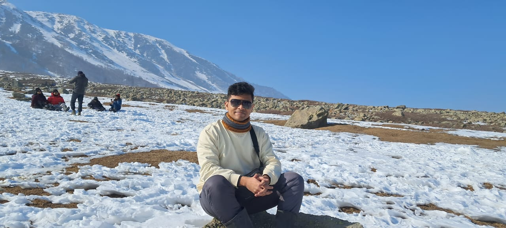

I am a passionate software engineer interested in VLMs, Computer vision and software testing.

Hi, I'm Sameer. I am currently working at Therap (BD) Ltd as a Software QA Engineer. I completed my Bachelor's degree in Computer Science & Engineering from Islamic University of Technology. I am passionate about continuous learning and am looking for opportunities where I can grow professionally, expand my skill set, and contribute to delivering reliable and efficient software products.
--
--
Open to research collaborations, interesting engineering roles, and conversations on AI Research.